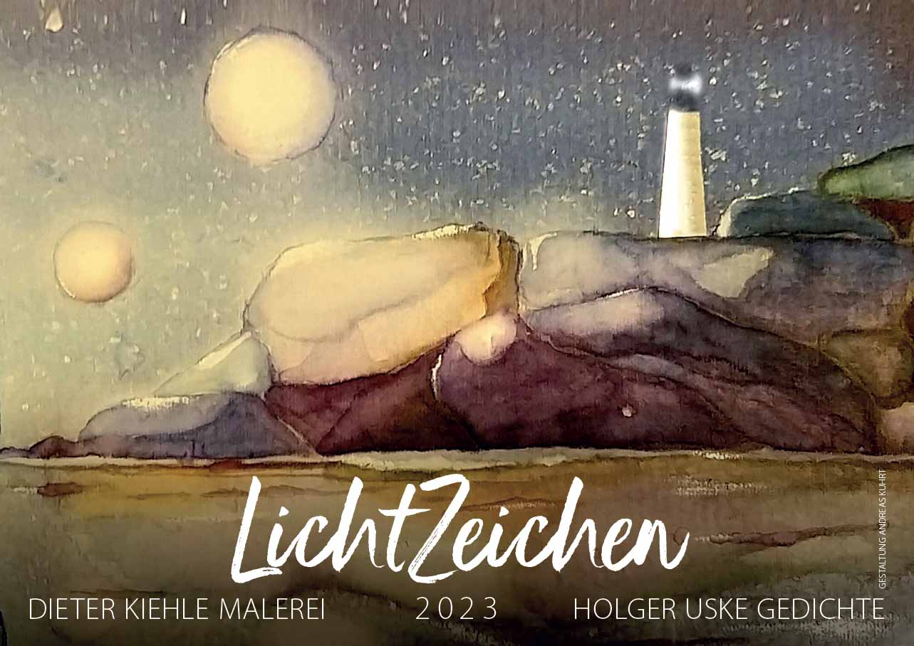
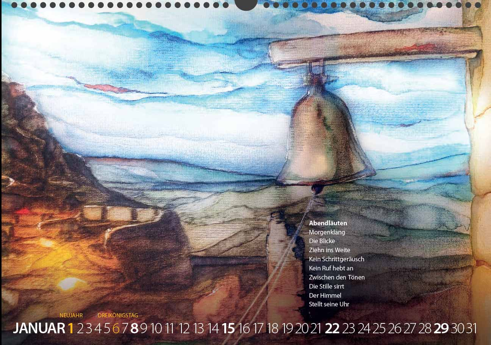
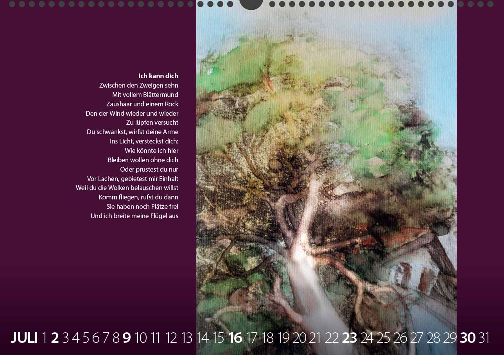
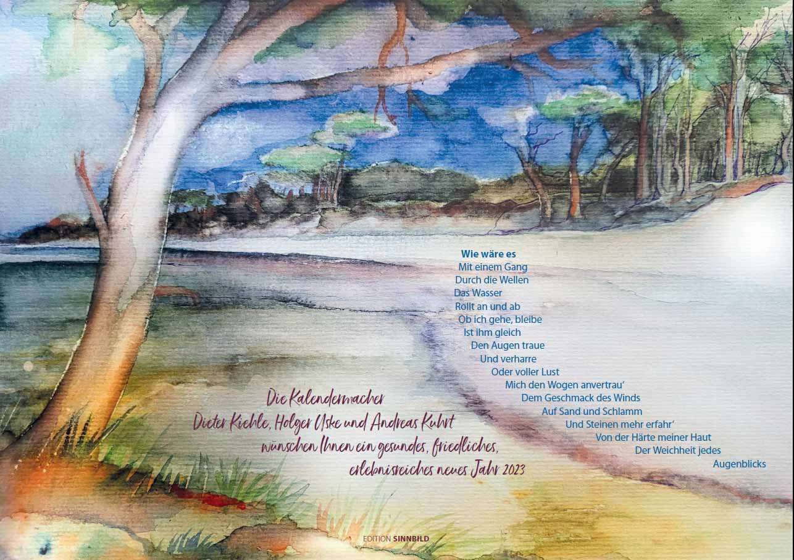

Bildnerische Arbeiten von Dieter Kiehle, Lyrik von Holger Uske. Gestaltung edition sinnbild Andreas Kuhrt.

Nach der Lyrik-Grafik-Mappe unter dem Titel „Lichtspiel – Wortspiel" 2020, dem Erzählungsband „Am Saum der Zeit" 2021 und dem Kalender „Wegzeichen" für 2022 setzen Holger Uske (Texte) und Dieter Kiehle (bildnerische Arbeiten) mit dem Kalender „Lichtzeichen" für 2023 ihre Zusammenarbeit fort. Die Gestaltung oblag erneut Andreas Kuhrt, edition sinnbild suhl.
Erneut wurden die Arbeiten von Dieter Kiehle Ausgangspunkt für die lyrischen Texte von Holger Uske. Herausfordernd und ergänzend, bereichernd und auslegend nähert sich der Dichter den Motiven des Malers, setzt sein Sprachwerk zu dem Bildwerk in Beziehung. Kuhrts Gestaltung fügt dem Ganzen dann eine eigene Note hinzu. Und es war auch die Idee von Andreas Kuhrt, dem Leser/Betrachter diesmal 14 Blätter anzubieten, insbesondere das Rückblatt.
Der Kalender wurde in einer Auflage von 75 Exemplaren hergestellt und ist im Buchhaus Suhl sowie in der Buchhandlung am Topfmarkt Suhl erhältlich.
Abendläuten
Morgenklang
Die Blicke
Ziehn ins Weite
Kein Schrittgeräusch
Kein Ruf hebt an
Zwischen den Tönen
Die Stille sirrt
Der Himmel
Stellt seine Uhr


Ich kann dich
Zwischen den Zweigen sehn
Mit vollem Blättermund
Zaushaar und einem Rock
Den der Wind wieder und wieder
Zu lüpfen versucht
Du schwankst, wirfst deine Arme
Ins Licht, versteckst dich:
Wie könnte ich hier
Bleiben wollen ohne dich
Oder prustest du nur
Vor Lachen, gebietest mir Einhalt
Weil du die Wolken belauschen willst
Komm fliegen, rufst du dann
Sie haben noch Plätze frei
Und ich breite meine Flügel aus
Wie wäre es
Mit einem Gang
Durch die Wellen
Das Wasser
Rollt an und ab
Ob ich gehe, bleibe
Ist ihm gleich
Den Augen traue
Und verharre
Oder voller Lust
Mich den Wogen anvertrau'
Dem Geschmack des Winds
Auf Sand und Schlamm
Und Steinen mehr erfahr'
Von der Härte meiner Haut
Der Weichheit jedes
Augenblicks
